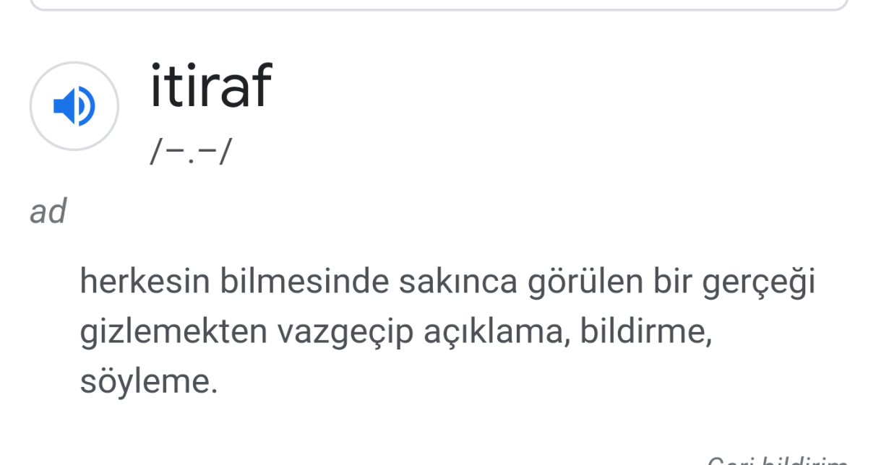

İtiraf odasına yazılmaması gereken bazı şeyler:
- Herhangi bir diziyi izlemediğinizi belirtmek itiraf değildir. exp.(Behzat Ç izlemiyorum)
- Porno yada sex sahnesi tercihlerinizi yazmayın,
- Discorddaki kişiler hakkında söyleceğiniz lafları, anonim kimlik altında oraya yazmayın. exp.(XXX kişisi YYYY 'dir),